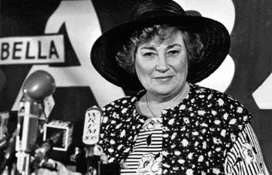

Here we’ll rate the big-name feminists, limited to their most (in)famous activists. Thus, Hillary Clinton (for example) doesn’t count. Cupcake is best known as a political figure: Secretary of State, New York Carpetbagger Senator, First Lady during Bill Clinton’s administration, and (close, but no cigar) Presidential candidate. Also, Mattress Girl isn’t famous enough; liars are a dime a dozen.
The contestants are listed in order of their “Hot Babe” number. However, instead of going from the plainest to prettiest as usual, it’s in descending order. That indicates our awareness of the problematic fact that people with good looks have more privilege in society. Therefore, listing them backwards will help correct this injustice. After all, symbolic gestures totally make a difference, righty right?
HB5: Gloria Steinem

Give me an “A”!
This contestant is among the best known big-name feminists, and also their cutest. This Toledo native moved to the mothership of NYC to pursue journalism. She became a Playboy Bunny and wrote a boring tell-all account. For a while, that hindered her journalism career (and presumably her cocktail waitress career). She encountered the Big Apple’s radical feminist scene, even attending meetings of the infamous Redstockings. Understandably, there was a kerfuffle when those radicalinskis discovered her earlier CIA ties.
Starting Ms. Magazine in 1972 became her big break. As the best face that radical feminism ever had, her activism efforts kicked into high gear. Eventually, she attained a list of awards, citations, and other tributes longer than Charles Manson’s rap sheet.
Bangability: Back in the 1970s, she was modestly cute, worth asking where the pet shop is. However, this didn’t make her outstanding. Modestly cute babes were much more common back then; they paid better attention to their appearance and didn’t implant facial shrapnel. She’s aged fairly well too, and didn’t hit The Wall very hard.
Personality: She was a little more agreeable during her early days. Now, she generally comes across like a typical tedious liberal. Those types don’t make you run away screaming, but you nod patiently and go “yeah, okay” as they excitedly babble through their talking points they got from CNN fake news. Still, she’s well ahead of the curve for the notoriously crabby Second Wave feminists.
Finally: Gloria could’ve been quite charming if she hadn’t gotten mixed up in feminism.
HB4: Bella Abzug

What’s with all her hats?
This Columbia graduate (that figures) and attorney became a New York Congressbabe. During Watergate’s aftermath, she wanted to block Gerald Ford’s nomination as VP. That would’ve made the Democratic house speaker the next President. Fortunately, he had the good taste not to cooperate; Bella’s plot would’ve been dirtier than anything Tricky Dick ever did.
Bangability: Bella the Battle-Ax was… well, plain is the nice way to put it.
Personality: As she herself wrote:
I’ve been described as a tough and noisy woman, a prize fighter, a man-hater, you name it. They call me Battling Bella, Mother Courage, and a Jewish mother with more complaints than Portnoy. There are those who say I’m impatient, impetuous, uppity, rude, profane, brash, and overbearing.
Roger that.
Finally: HB4s aren’t exactly eye candy. However, they’ll do if they are a joy to be around and radiate charm.
HB3: Betty Friedan
It’s understandable why she was so crabby.
This babe hobnobbed with Communists since childhood, but is better known for founding outfits like NOW and NARAL. Her book The Feminine Mystique persuaded millions of women to define their success the way men do, leaving their homes in droves for the awesome adventure of cube farms.
Bangability: I’d need some serious beer goggles to tap that.
Personality: This bitch needed a flea and tick collar. Also, she had an ongoing catfight with Gloria Steinem. Jealousy?
Finally: HB3s like Betty are really getting into last resort territory.
HB2: Elizabeth Cady Stanton and Susan B. Anthony
Lips that touch liquor shall not touch ours!
These two BFFs are tied for second place. Along with Lucretia Mott, they began America’s feminist movement. The First Wave—back when it really was about equality—wasn’t too objectionable. Their Declaration of Sentiments was considerably more reasonable (and far less snotty) than contemporary feminist writings. Unfortunately, the movement they launched eventually became as toxic as a screwdriver made with Agent Orange.
Stanton was a spoiled rich chick, quite self-absorbed, and—like most other contestants here—had some Daddy issues. Still, she was an angel compared to typical contemporary feminists. As for Anthony, she—like Lucretia Mott—came from a Quaker background. (Why were so many Quakers involved in feminism and other radical stuff? Many strange coincidences here…) She soon became a professional activist.
These contestants also supported the temperance movement, an effort eventually leading to Prohibition. Perhaps it seemed like a good idea then, but the results speak easily for themselves. The beginning of America’s Decline: The Education of a Conservative argues fairly persuasively that the USA’s train ride to hell first began with Prohibition. It’s also why American beer was swill until the 1990s craft brewing vogue.
Bangability: Gloria Steinem is an old lady now, but still is cuter than these two during their bloom of youth. Stanton somehow got married around age 24 (back then, that was pushing “old maid” territory). Shared political interests fueled the none-too-congenial relationship. More surprisingly, they had seven kids. If I had to bang her seven times, the trauma would’ve made me fill out a job application at the nearest monastery.
As for Anthony, she was the butch one, but aged slightly better. She was a lifelong spinster, highly unusual then. If she’d wanted, she could’ve found a suitor with bad eyesight. Reading between the lines, could they have been secret carpet munchers?
Personality: They were generally regarded as eccentrics and radicals. However, they’d be very proper and agreeable ladies by today’s standards. Further, either one of this Dynamic Duo seems like Saint Agnes, if compared to specimens like Big Red and Trigglypuff.
Finally: An HB2 war-pig becomes thinkable only when the bar’s closing, your alcohol consumption impaired your vision and judgment, and your friends will never know. However, as Temperance activists, getting some dick from 2AM nightgame wasn’t possible.
HB1: Andrea Dworkin

Shortly before her mass contracted under immense gravity and created a black hole
Our least attractive contestant was a true nutcase. She married some Dutch anarchist who happened to be a psycho. Stranded in Europe, she tried being a hooker, but somehow couldn’t earn enough for a return flight. She would’ve become a drug mule, if not for a last-minute supply problem, but the dealer let her keep the ticket. Back in the USA, she became a prime example of a feminist projecting her bad experiences onto all men.
Bangability: Although I give big gals a chance, reasonable limits apply. (Those needing to weigh in on a livestock scale at the large animal vet should quit snacking.) Further, they need at least one standout characteristic to catch my notice, like a pretty face, gorgeous hair (brushing it and using conditioner does wonders), bodacious perky breasts, or simply overall feminine grace. Jabba the Feminist lacked any such sparkle, due to self-neglect.
Personality: Where do I even begin? She makes Cupcake (even after her funk from losing the election) seem like a sweetheart.
Finally: This hambeast wasn’t Bubba from Cellblock 6, but that’s not saying much.
Where are the rest?
Time for a break! These gals are too cute, adorable, and intelligent to be feminists.
You might’ve noticed the absence of HB6-10 big-name feminists. That’s because there aren’t any.
Read More: Top 10 Worst Female Role Models In The Entire World